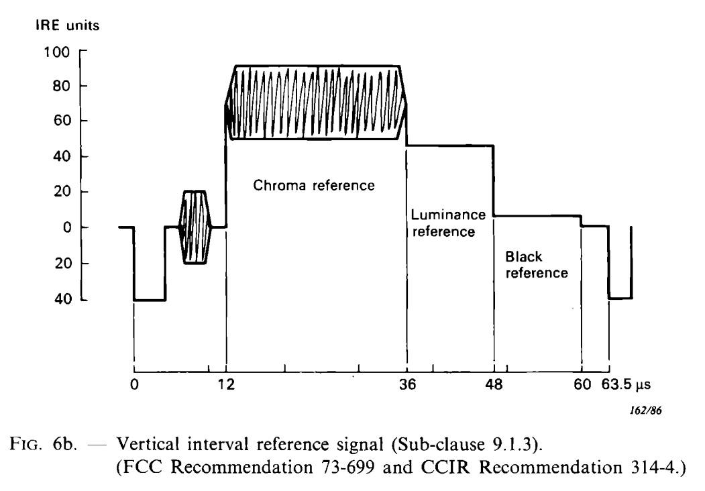
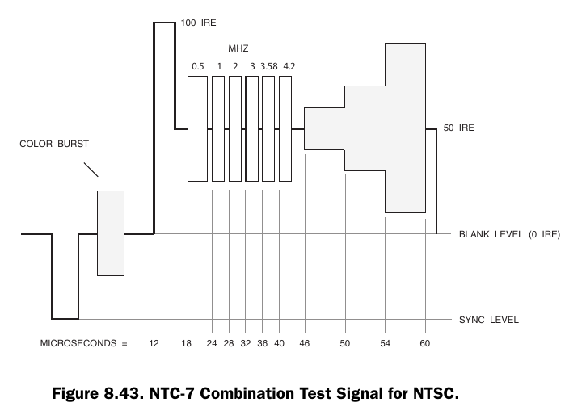
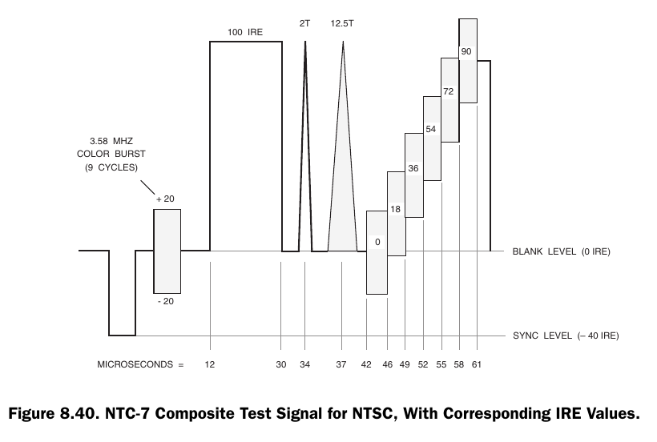

LaserDisc NTSC VITS¶
Reference: Video Demystified, 5th Edition — ISBN 978-0-750-68395-1
Assumptions unless stated otherwise:
- 75 Ω terminated composite video
- 1 V p-p nominal (PAL), 1 V p-p NTSC (with −40 to −43 IRE sync)
- Timing measured from leading edge of horizontal sync
NTSC System Reference (525/59.94)¶
| Parameter | Value |
|---|---|
| Line period | 63.556 µs |
| Colour subcarrier | 3.579545 MHz |
| Burst length | ~9 cycles |
| Sync level | −40 to −43 IRE |
| Active video | ≈52.7 µs |
Vertical Interval Reference Signal (VIRS)¶

VITS lines: 19 and 282Description¶
In NTSC systems, the Vertical Interval Reference (VIR) signal is a program-related reference inserted in the vertical blanking interval (commonly line 19 in each field in the USA) to help maintain consistent luminance/chroma setup through a broadcast chain.
Structure¶
- Sync tip: –40 IRE (peak)
- Burst
- Blanking level: 0 IRE
- Chrominance reference (superimposed on the 70 IRE pedestal): ±20 IRE about the pedestal (i.e., swings from 50 IRE to 90 IRE, with 90 IRE peak).
- Black reference (“setup”): +7.5 IRE
- Luminance reference pedestal: +50 IRE
Timing¶
The VIR content shown spans 60 µs, partitioned as:
- 12 µs (initial segment after sync/back-porch region in the diagram)
- 24 µs (luminance pedestal with superimposed chrominance reference)
- 12 µs Luminance reference
- 12 µs Black reference
NTC-7 Combination Test Signal for NTSC (Figure 8.43)¶

VITS line: 20Description¶
NTC-7 Version for NTSC
The NTC (U. S. Network Transmission Committee) has also developed a combination test signal that may be used to test several video parameters, rather than using multiple test signals. The NTC-7 combination test signal for NTSC systems (shown in Figure 8.43) consists of a white flag, a multiburst, and a modulated pedestal signal.
The white flag has a peak amplitude of 100 ±1 IRE and a width of 4 µs.
The multiburst has a 50 ±1 IRE pedestal with peak-to-peak amplitudes of 50 ±0.5 IRE. The starting point of each frequency packet is at zero phase. The width of the 0.5 MHz packet is 5 µs; the width of the remaining packets is 3 µs.
The 3-step modulated pedestal is composed of a 50 IRE luminance pedestal, superimposed with three amplitudes of modulated chrominance (20 ±0.5, 40 ±0.5, and 80 ±0.5 IRE peak-to-peak) that have a phase of –90° ±1° relative to the burst. The rise and fall times of each modulation packet envelope are 400 ±25 ns.
The NTC-7 combination test signal may be present on line 280.
Components¶
- Multiburst: 0.5–4.2 MHz
- 100 IRE white reference
- Luminance pedestal block (~50 IRE)
Timing¶
- Multiburst: ~18–40 µs
- Pedestal block: ~46–60 µs
NTC-7 Composite Test Signal for NTSC (Figure 8.40)¶

VITS line: 283Description¶
NTC-7 Version for NTSC
The NTC (U. S. Network Transmission Committee) has developed a composite test signal that may be used to test several video parameters, rather than using multiple test signals. The NTC-7 composite test signal for NTSC systems (shown in Figure 8.40) consists of a 100 IRE line bar, a 2T pulse, a 12.5T chrominance pulse, and a 5-step modulated staircase signal.
The line bar has a peak amplitude of 100 ±0.5 IRE, and 10–90% rise and fall times of 125 ±5 ns with an integrated sine-squared shape. It has a width at the 60 IRE level of 18 µs.
The 2T pulse has a peak amplitude of 100 ±0.5 IRE, with a half-amplitude width of 250 ±10 ns.
The 12.5T chrominance pulse has a peak amplitude of 100 ±0.5 IRE, with a half-amplitude width of 1562.5 ±50 ns.
The 5-step modulated staircase signal consists of 5 luminance steps superimposed with a 40 ±0.5 IRE subcarrier that has a phase of 0° ±1° relative to the burst. The rise and fall times of each modulation packet envelope are 400 ±25 ns.
The NTC-7 composite test signal may be present on line 17.
Elements¶
- 100 IRE white bar
- 2T and 12.5T pulses
- Staircase (0–90 IRE)